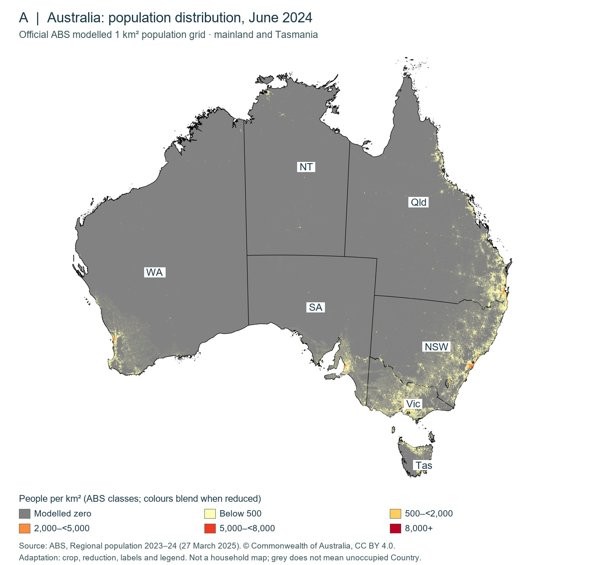

Y9-01 · Exact screen-copy and component handoff
DESIGN HANDOFF ONLY — no new shared visual treatment implemented or approved. This is a content/requirements document, not an application capture, learner mock-up, editable Figma file or visual approval.
Use the existing separate Figma workflow and existing reference file/nodes. Structured handoff JSON · Actual application gallery · Actual before/after comparisons.
Evidence boundary and inquiry
How is Australia’s population distributed, and what might explain one pattern?
Sources A and B measure population distribution and change. Employment, services and infrastructure are possible influences requiring additional evidence; their distribution is not directly measured here.
A · Geographical evidence investigation — exact copy
Investigate Source A · 8 min
Paper instructions: Write in your exercise book. Read the four questions below the map first, then choose Inspect source. Select Fit source, then Zoom in (+) to read the legend and regional pattern; use the arrow keys to pan and 0 to fit again. Task shows the map-reading reminder; Source details gives provenance. Close returns to these questions. Record observations before explanations.
Use Source A in Inspect source, then answer in your exercise book.
- Identify the producer, population reference date, unit and what each coloured grid cell represents.
- Describe two located concentrations and contrast them with a broad interior area. Name regions, not exact streets.
- Identify an exception to “everyone lives on the east coast”. Use the map, not a guess.
- Explain why a grey cell and a national-scale thumbnail do not prove that a place has no people, communities, activity or significance.
Stable question ID: y9-01-mapActual Source A asset — unchanged

Source A · June 2024 modelled population density. Adapted from ABS, Regional population 2023–24 (27 March 2025). © Commonwealth of Australia, CC BY 4.0. Full provenance: Source details.
Source image SHA-256: 5e703457e6baf1702712489a29c4ff4a16223b2e044d4aa79f2c64057f7da891
Exact source metadata
- title
- Australian population grid 2024 (adapted)
- date
- June 2024; release 27 March 2025
- creator
- Australian Bureau of Statistics
- accession
- apg24e_1_0_0; ABS Regional population 2023–24
- institution
- Australian Bureau of Statistics
- url
- https://www.abs.gov.au/statistics/people/population/regional-population/2023-24
- rights
- © Commonwealth of Australia, CC BY 4.0; adapted
- licenseUrl
- https://creativecommons.org/licenses/by/4.0/
- referencePeriod
- 30 June 2024
- releaseDate
- 2025-03-27
- notes
- Modelled from preliminary ERP. National-scale reduction is for regional patterns, not exact cell readings. Adaptation: mainland/Tasmania crop, resizing, region labels and legend. Licence: https://creativecommons.org/licenses/by/4.0/
Investigate Source B · 7 min
Paper instructions: Answer in your exercise book. Include units and the period. Keep a count, a percentage growth rate and a density separate.
Compare Sydney and Brisbane using Source B.
- Which had more residents in June 2024? By how many?
- Which added more residents in 2023–24? By how many? Which had the higher percentage growth?
- Why can you not use these four rows to state Australia’s urban share or rank these regions by density?
Stable question ID: y9-01-tableActual Source B data — unchanged
| Capital-city region | Residents, June 2024 | Added residents, 2023–24 | Growth, 2023–24 (%) |
|---|
| Sydney | 5,557,233 | 107,538 | 2.0 |
|---|
| Melbourne | 5,350,705 | 142,637 | 2.7 |
|---|
| Brisbane | 2,780,063 | 72,930 | 2.7 |
|---|
| Perth | 2,384,371 | 72,742 | 3.1 |
|---|
Preliminary ERP at 30 June 2024 in this dated release; later releases may revise estimates. Change from 30 June 2023 to 30 June 2024. GCCSAs are broad capital-city regions, not just built-up areas. Selected regions only; do not sum these rows to calculate Australia’s urban share. © Commonwealth of Australia, CC BY 4.0. Source: ABS Regional population 2023–24, 27 March 2025.
Required source states
- A-preview: Initial map, source letter/date/unit, inspection guidance and task association. Do not require interpreting tiny red/yellow cells before inspection.
- A-inspect-fit: Actual map fitted in existing inspector; Zoom in/out, Fit source, Reset view, Task, Source details and Close remain available.
- A-inspect-zoom: Zoom until legend and regional detail are legible; allow keyboard +/−/0 and arrow-key pan. Label a zoomed crop as detail, not the complete distribution.
- A-task-drawer: Question association must be clear. Current source-level Task field is a general map-reading reminder shared by map uses. Design the relation to the current exact task; do not pretend the shipped drawer already switches dynamically between all six questions.
- A-provenance: Expose the exact ABS metadata, CC BY 4.0, adaptation notice and modelling limits without crowding the default task.
- A-return: Close restores focus to the invoking inspection control and returns to the same task; preserve existing keyboard behaviour.
- A-table-left-right: For Source B investigation, provide initial and right-scrolled views at native 200%. All four rows and the growth-percent heading remain reachable.
B · Worked statistical comparison and guided reasoning — exact copy
Read, compare, qualify · 5 min
Read Source B, then follow the complete worked comparison. Why can the largest increase and the fastest growth describe different places?
| Capital-city region | Residents, June 2024 | Added residents, 2023–24 | Growth, 2023–24 (%) |
|---|
| Sydney | 5,557,233 | 107,538 | 2.0 |
|---|
| Melbourne | 5,350,705 | 142,637 | 2.7 |
|---|
| Brisbane | 2,780,063 | 72,930 | 2.7 |
|---|
| Perth | 2,384,371 | 72,742 | 3.1 |
|---|
Preliminary ERP at 30 June 2024 in this dated release; later releases may revise estimates. Change from 30 June 2023 to 30 June 2024. GCCSAs are broad capital-city regions, not just built-up areas. Selected regions only; do not sum these rows to calculate Australia’s urban share. © Commonwealth of Australia, CC BY 4.0. Source: ABS Regional population 2023–24, 27 March 2025.
- Identify: Source B is the ABS 27 March 2025 release. Its June 2024 ERP is preliminary in this dated release and may be revised later. It compares ERP for four selected GCCSAs, with changes over 2023–24. These are broad city regions, not four equally sized built-up areas.
- Read: Melbourne added 142,637 residents, compared with Perth’s 72,742. Melbourne therefore had the larger numerical increase of this pair.
- Calculate and compare: Melbourne’s earlier population was 5,350,705 − 142,637 = 5,208,068; 142,637 ÷ 5,208,068 × 100 ≈ 2.7%. Perth’s was 2,384,371 − 72,742 = 2,311,629; 72,742 ÷ 2,311,629 × 100 ≈ 3.1%. Perth grew faster proportionally because the change is measured against a smaller starting population.
- Conclude with a limit: more added residents and a faster percentage growth are different measures. These selected city-region changes do not establish Australia’s urbanisation: a consistent urban definition and national urban/total populations over time would also be needed.
Plan an explanation · 3 min
Paper instructions: Plan four short points in your exercise book, using Sources A and B below. This is a plan, not a second full paragraph. Your teacher holds the model answer until after your attempt.
Explain a concentration shown on Source A.
- Observation: locate one concentration and contrast it with another region.
- Evidence: identify the source date, what the colour represents and a relevant numerical comparison from B. Do not treat city counts as density.
- Inference: propose one possible influence and explain the mechanism.
- Qualification: name a missing source that could test the inference and explain one limit of A or B.
Stable question ID: y9-01-guidedExplain one population pattern · 8 min
Paper instructions: Core: write 60–90 words (about four or five sentences) in your exercise book. Use 2 min to select evidence and plan, 5 min to write, and 1 min to check. Sources A and B are below. Extension, if ready: add a second possible mechanism and develop the response towards 100–140 words. Complete your attempt before teacher-led feedback.
How is Australia’s population distributed, and what might explain one pattern? Use Sources A and B.
- Describe a located distribution pattern from A and one exception.
- Support your response with one accurate comparison from B, stating date/period and units.
- Explain one possible influence and how it might affect the pattern. Employment, services and infrastructure are hypotheses here, not activities directly measured by A or B.
- State a source limitation and propose specific additional evidence to test one explanation.
Stable question ID: y9-01-independentGuided and independent models are deliberately absent from these student-frame specifications. They remain in the separate teacher guide.
Required comparison/reasoning states
- B-worked: Table and preserved method form one clear reading sequence. Current supported placement already removes the narrow two-column Example 1 / Your task panel; do not reconstruct a squeezed table for consistency.
- B-guided: Three-minute four-point plan, not another full paragraph. Make observation, statistical comparison, possible mechanism, and test/limit distinct.
- B-independent: Eight-minute core: 2 min plan, 5 write, 1 check; 60–90 words; one mechanism. A second mechanism and 100–140 words are an extension, not a minimum.
- B-native200: Readable stacked flow, vertical scrolling and local table scrolling. No page-level horizontal overflow, clipping or altered browser zoom.
Shared component and accessibility requirements
- reuse
- Approved G03 heading/body/spacing and temporary teal tokens; existing lesson shell, source inspector and question components. No subject-theme redesign.
- navigation
- Keep shared lesson outline and Previous/Next footer. Reading, inspecting, returning and writing in a book must remain coherent; no new response store or nested lesson navigation.
- focus
- Preserve visible keyboard focus. Do not remove the cyan focus outline seen in genuine captures merely for screenshot aesthetics.
- answers
- Teacher-withheld paper tasks: no correct responses or models in the student task frame. The worked comparison is intentionally taught; the guided/independent models remain only in the teacher guide.
- metadata
- Keep A/B source letters beside their evidence and questions. Show a concise citation first; full provenance/rights/limits remain discoverable through Source details or an explicitly designed existing details region. Never discard them.
- images
- Preview may be concise, but legend detail must be readable in the existing inspection workspace. Separate preview, fit, zoomed and task/provenance states; do not claim all legend text is legible in the thumbnail.
- tables
- Keep heading words intact and all values/units readable. At constrained width or native 200%, local horizontal scrolling is acceptable; make the scroll affordance and rightmost heading discoverable. Do not shrink fonts to avoid scrolling.
- technology
- No new GIS, G06, graph engine, workbook, Dot dependency or backend. No new JSON schema field is chosen by this document.
Required frame checks
- Desktop: {"name":"Desktop","browserViewport":{"width":1536,"height":1000},"zoom":"100%"}
- Laptop: {"name":"Laptop","browserViewport":{"width":1280,"height":1000},"zoom":"100%"}
- Narrow laptop: {"name":"Narrow laptop","browserViewport":{"width":1024,"height":1000},"zoom":"100%"}
- Native desktop 200%: {"name":"Native desktop 200%","outerWindow":{"width":1536,"height":1000},"observedCSSViewport":{"width":757},"devicePixelRatio":2,"cssZoom":1,"zoom":"Genuine browser 200%; use actual capture dimensions, not a smartphone design frame."}
Decisions for the design chat
- Default evidence/task hierarchy and the appropriate map preview footprint versus explicit inspection.
- Compact citation versus full provenance presentation, retaining all rights/limitations.
- Geography-appropriate authored labels for worked comparison and guided reasoning, scoped so Mathematics and History remain unchanged.
- Whether exact task text belongs in the inspection drawer, and how source reuse should preserve the current task association.
Shared implementation boundary
Only supported lesson content/configuration changed. No shared code, styles, keyboard focus, source inspector or response behaviour changed.
GEO-EVIDENCE-COMPOSITION-001 — proposed, not launched
Implement only the approved opt-in evidence/comparison composition and authored geographical labels/preview treatment. Audit the existing source/question adapter and schema first; no literal new layout/schema field is preselected.
Approved actual Y9-01 frames at 1536/1280/1024/native 200%; source/legend/task association, keyboard/focus/zoom/scroll, JSON round-trip and export redaction; affected Mathematics/History regression and unchanged existing lessons. No new engine, theme, response system or publication.
Return approved Figma direction before any shared-player implementation. This handoff grants no implementation, merge, deployment or publication authority.